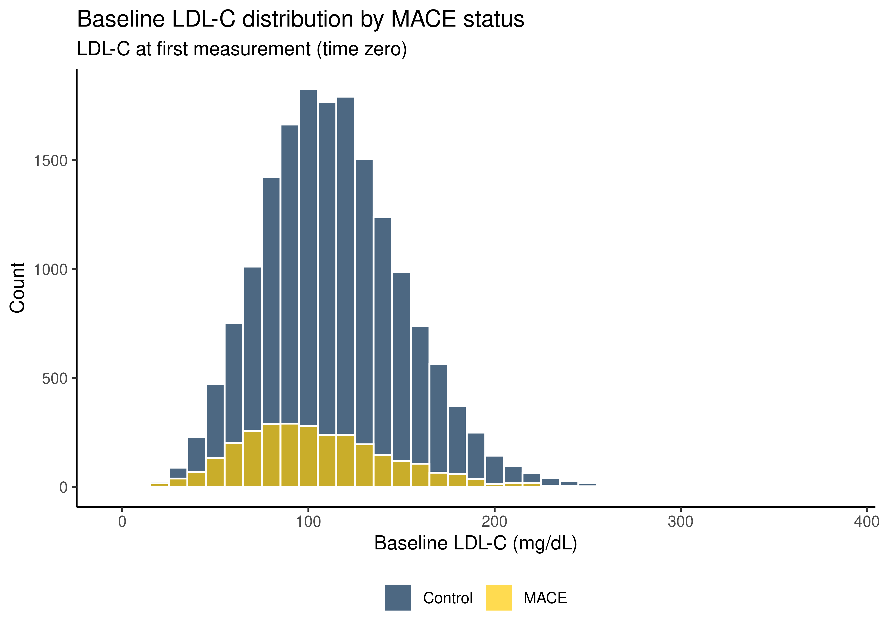
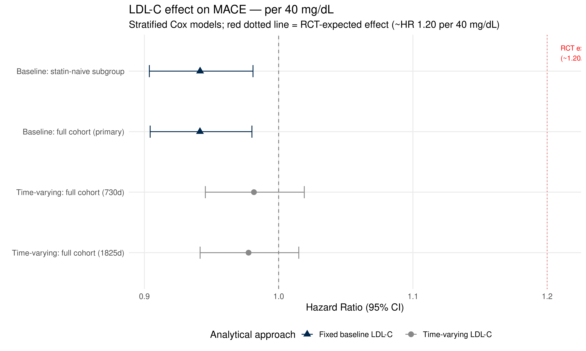

Baseline LDL-C and MACE — Fixed Exposure Cox Model
Author
Dave Bridges
Published
March 27, 2026
Purpose
This script implements a baseline LDL-C exposure model as a methodological companion to the primary time-varying LDL-C analysis (ldlc_mace_analysis.qmd). The two scripts answer related but distinct scientific questions:
Primary script (time-varying): Does a patient’s current LDL-C level predict near-term MACE risk? LDL-C is updated at each measurement visit using last-observation-carried-forward (LOCF).
This script (baseline): Does a patient’s LDL-C level at the time they enter care predict their long-term MACE risk? LDL-C is fixed at the first measurement and does not change over follow-up.
The baseline approach is methodologically closer to landmark observational studies (Framingham, INTERHEART) that measured LDL-C once at enrollment. It avoids the treatment dilution problem inherent in time-varying models — post-treatment LDL-C values, which reflect statin response rather than underlying atherogenic burden, do not enter the exposure definition. The tradeoff is that baseline LDL-C may not represent the patient’s lipid burden throughout the full follow-up period, particularly in a cohort with 14-year median follow-up.
Because the exposure is fixed at time zero, statin adjustment requires a different approach than the primary model. We stratify on baseline statin status — whether the patient was already on a statin at the time of their first LDL-C measurement — rather than using a time-varying statin covariate. This is the most internally consistent approach: the exposure (LDL-C) and the primary confounder adjustment (statin use) are both anchored at the same time point. It cleanly separates patients whose baseline LDL-C reflects pre-treatment lipid biology from those already on treatment.
The cohort derivation, exclusion criteria, and secondary covariates (diabetes, hypertension, age stratification, follow-up period) are identical to the primary script to ensure comparability.
Raw Data
All raw data files are loaded independently — this script is fully self-contained and does not depend on objects from the primary analysis script.
The full demographic file contains 201,073 unique patients.
Cohort Derivation
The cohort derivation follows the identical pipeline as the primary script. Patients are included if they have at least one valid LDL-C measurement after age 18, a valid follow-up period, and a classifiable MACE outcome.
Negative or zero follow-up (prevalent MACE + invalid controls)
-556
Final analytic cohort
20015
The final analytic cohort contains 20015 patients (2871 incident MACE cases and 17144 controls), identical to the primary script.
Baseline LDL-C Characterisation
Unlike the primary script, the exposure in this analysis is a single value per patient — the LDL-C measured at their first visit. It is important to characterise this value and understand how it relates to statin use at baseline, since statin-treated patients will have systematically lower measured LDL-C than statin-naive patients.
# Histogramggplot(base_cohort, aes(x = baseline_LDL,fill =factor(MACE_flag,labels =c("Control", "MACE")))) +geom_histogram(binwidth =10, alpha =0.7, position ="identity",colour ="white") +scale_fill_manual(values = color_scheme) +labs(title ="Baseline LDL-C distribution by MACE status",subtitle ="LDL-C at first measurement (time zero)",x ="Baseline LDL-C (mg/dL)", y ="Count", fill =NULL) +theme_classic() +theme(legend.position ="bottom")

Baseline Statin Status
The primary confounder adjustment for this model is baseline statin status — whether the patient was already on a statin at the time of their first LDL-C measurement. This is ascertained by checking whether any statin prescription interval was active at time zero.
Patients already on a statin at baseline will have lower measured LDL-C that reflects treatment response rather than underlying atherogenic burden. Stratifying on this variable allows the model to estimate the LDL-C/MACE association separately within statin-naive and statin-treated patients, avoiding the assumption that the relationship is the same in both groups.
Baseline LDL-C and MACE rates by baseline statin status
Statin status
N
Mean LDL-C (mg/dL)
Median LDL-C (mg/dL)
MACE events
MACE rate (%)
Statin-naive at baseline
19227
113.2
111
2767
14.4
On statin at baseline
788
104.0
98
104
13.2
Show the code
# Intensity distribution among baseline statin usersbase_cohort %>%filter(baseline_statin ==1) %>%count(baseline_intensity) %>%kable(caption ="Statin intensity distribution among baseline statin users")
Statin intensity distribution among baseline statin users
baseline_intensity
n
low
61
moderate
495
high
226
NA
6
The difference in mean LDL-C between statin-naive and statin-treated patients at baseline quantifies the treatment dilution effect — the degree to which statin use at baseline depresses the measured LDL-C relative to underlying atherogenic burden.
Comorbidity Data
Comorbidity onset dates are loaded from the pre-processed file and converted to a baseline flag — whether each condition had been diagnosed before or at time zero. This is appropriate for the baseline model since we want to characterise the patient’s comorbidity burden at the time of the first LDL-C measurement, not over follow-up.
For consistency with the primary model, diabetes and hypertension are also modelled as time-varying covariates (turning on at first diagnosis date, whether before or after time zero). This avoids discarding post-baseline incident diagnoses.
Show the code
comorbidity_onset <-read_csv("combined_data/ComorbiditiesOnset.csv",show_col_types =FALSE) %>%mutate(DeID_PatientID =as.character(DeID_PatientID),diabetes_onset =as_datetime(diabetes_onset),hypertension_onset =as_datetime(hypertension_onset),obesity_onset =as_datetime(obesity_onset),renal_failure_onset =as_datetime(renal_failure_onset) )# Time-varying comorbidity covariates (days since t0, same as primary model)comorbidity_tv <- comorbidity_onset %>%inner_join(first_ldlc %>%select(DeID_PatientID, t0),by ="DeID_PatientID") %>%mutate(t_diabetes =as.numeric(difftime(diabetes_onset, t0, units ="days")),t_hypertension =as.numeric(difftime(hypertension_onset, t0, units ="days")),t_renal =as.numeric(difftime(renal_failure_onset, t0, units ="days")),t_obesity =as.numeric(difftime(obesity_onset, t0, units ="days")) ) %>%select(DeID_PatientID, t_diabetes, t_hypertension, t_renal, t_obesity)# Baseline comorbidity flags (diagnosed at or before t0)baseline_comorbidities <- comorbidity_onset %>%inner_join(first_ldlc %>%select(DeID_PatientID, t0),by ="DeID_PatientID") %>%mutate(baseline_diabetes =as.integer(!is.na(diabetes_onset) & diabetes_onset <= t0),baseline_hypertension =as.integer(!is.na(hypertension_onset) & hypertension_onset <= t0),baseline_obesity =as.integer(!is.na(obesity_onset) & obesity_onset <= t0),baseline_renal =as.integer(!is.na(renal_failure_onset) & renal_failure_onset <= t0) ) %>%select(DeID_PatientID, baseline_diabetes, baseline_hypertension, baseline_obesity, baseline_renal)base_cohort <- base_cohort %>%left_join(baseline_comorbidities, by ="DeID_PatientID") %>%mutate(across(starts_with("baseline_d") |starts_with("baseline_h") |starts_with("baseline_o") |starts_with("baseline_r"),~replace_na(.x, 0L)))# Baseline comorbidity prevalencetibble(Condition =c("Diabetes", "Hypertension", "Obesity", "Renal failure"),`N at baseline`=c(sum(base_cohort$baseline_diabetes),sum(base_cohort$baseline_hypertension),sum(base_cohort$baseline_obesity),sum(base_cohort$baseline_renal) ),`% of cohort`=round(100*c(mean(base_cohort$baseline_diabetes),mean(base_cohort$baseline_hypertension),mean(base_cohort$baseline_obesity),mean(base_cohort$baseline_renal) ), 1)) %>%kable(caption ="Comorbidity prevalence at baseline (time zero)")
Comorbidity prevalence at baseline (time zero)
Condition
N at baseline
% of cohort
Diabetes
3217
16.1
Hypertension
6293
31.4
Obesity
3286
16.4
Renal failure
795
4.0
Building the Cox Model Dataset
The counting process structure is retained for consistency with the primary model and to allow time-varying comorbidity covariates to be included. The key difference is that baseline_LDL is joined as a fixed covariate — it does not change across intervals for a given patient.
Diabetes and hypertension are added as time-varying covariates (turning on permanently at first diagnosis, whether that occurred before or after time zero) to match the primary model’s covariate structure. This ensures the LDL-C HR is estimated under the same covariate conditions in both models.
The unadjusted model estimates the crude association between baseline LDL-C and MACE risk with no covariate adjustment. As in the primary script, this is expected to show a paradoxical inverse association driven by confounding by indication — statin users have lower LDL-C and higher underlying MACE risk.
Show the code
fit_unadj <-coxph(Surv(tstart, tstop, MACE) ~ baseline_LDL,data = surv.data, ties ="efron", id = DeID_PatientID)broom::tidy(fit_unadj, exponentiate =TRUE, conf.int =TRUE) %>%select(Term = term, HR = estimate,`95% CI low`= conf.low, `95% CI high`= conf.high,`p-value`= p.value) %>%mutate(across(where(is.numeric), ~round(.x, 4))) %>%kable(caption ="Unadjusted model — baseline LDL-C effect on MACE (per 1 mg/dL)")
Unadjusted model — baseline LDL-C effect on MACE (per 1 mg/dL)
The primary model stratifies on baseline statin status, age category, and follow-up period, and adjusts for diabetes and hypertension as time-varying regression terms. This is directly comparable to the primary time-varying LDL-C model in ldlc_mace_analysis.qmd.
Caveat on baseline statin stratification: This approach estimates the LDL-C effect within statin-naive and statin-treated subgroups, which is appropriate for the baseline framing. It does not account for statin initiation during follow-up. Patients who were statin-naive at baseline and later initiated statins contribute person-time to the statin-naive stratum throughout their follow-up, which may attenuate the LDL-C association in that stratum if late statin initiation is common. This is an inherent limitation of the fixed-exposure design and is discussed in the comparison with the time-varying model.
Show the code
# Diabetes and hypertension combined into composite cardiomet stratum# to avoid sparse cells. Stratifying separately gives 120 strata# with multiple cells having <5 events; composite gives 60 strata.fit_primary <-coxph(Surv(tstart, tstop, MACE) ~ baseline_LDL +strata(period) +strata(baseline_statin) +strata(age_cat) +strata(cardiomet),data = surv.data, ties ="efron", id = DeID_PatientID)fit_primary_40 <-coxph(Surv(tstart, tstop, MACE) ~ baseline_LDL_40 +strata(period) +strata(baseline_statin) +strata(age_cat) +strata(cardiomet),data = surv.data, ties ="efron", id = DeID_PatientID)# All terms (per 1 mg/dL)broom::tidy(fit_primary, exponentiate =TRUE, conf.int =TRUE) %>%select(Term = term, HR = estimate,`95% CI low`= conf.low, `95% CI high`= conf.high,`p-value`= p.value) %>%mutate(across(where(is.numeric), ~round(.x, 4))) %>%kable(caption ="Primary baseline model — LDL-C HR per 1 mg/dL")
Primary baseline model — LDL-C HR per 1 mg/dL
Term
HR
95% CI low
95% CI high
p-value
baseline_LDL
0.9985
0.9975
0.9995
0.0033
Show the code
# Per 40 mg/dLbroom::tidy(fit_primary_40, exponentiate =TRUE, conf.int =TRUE) %>%filter(term =="baseline_LDL_40") %>%select(Term = term, HR = estimate,`95% CI low`= conf.low, `95% CI high`= conf.high,`p-value`= p.value) %>%mutate(across(where(is.numeric), ~round(.x, 4))) %>%kable(caption ="Primary baseline model — LDL-C HR per 40 mg/dL")
Baseline LDL-C HR per 1 mg/dL across model specifications
Model
HR
95% CI
p-value
N obs
N events
Unadjusted
0.9953
(0.9943–0.9963)
0.0000
20007
2869
Stratified, no comorbidity
0.9972
(0.9962–0.9982)
0.0000
20007
2869
Stratified + cardiomet — PRIMARY
0.9985
(0.9975–0.9995)
0.0033
20007
2869
Stratified + cardiomet + renal + obesity
0.9986
(0.9976–0.9996)
0.0051
20007
2869
Statin-naive at baseline only
0.9984
(0.9974–0.9994)
0.0020
19220
2766
Statin-treated at baseline only
1.0018
(0.9961–1.0076)
0.5287
787
103
Show the code
broom::tidy(fit_primary_40, exponentiate =TRUE, conf.int =TRUE) %>%filter(term =="baseline_LDL_40") %>%mutate(across(where(is.numeric), ~round(.x, 4))) %>%select(HR = estimate, `95% CI low`= conf.low,`95% CI high`= conf.high, `p-value`= p.value) %>%kable(caption ="Primary baseline model — LDL-C HR per 40 mg/dL")
Primary baseline model — LDL-C HR per 40 mg/dL
HR
95% CI low
95% CI high
p-value
0.9414
0.9043
0.9801
0.0033
The statin-naive subgroup analysis (Sensitivity 3) is the most methodologically comparable to landmark studies such as Framingham, which enrolled largely untreated populations. If the LDL-C effect is strongest in this subgroup, it supports the interpretation that treatment dilution explains the null result in the full cohort.
Comparison with Primary Time-Varying Model
This section compiles the key results from both analytical approaches side by side. Differences in the LDL-C HR between the two models reflect the methodological distinction: baseline LDL-C captures pre-treatment lipid biology at a single point, while time-varying LDL-C reflects the current treated level throughout follow-up.
Show the code
# Load primary model results for comparison# These values are taken from ldlc_mace_analysis.qmd output# Update these manually if the primary script is re-runprimary_tvc_results <-tibble(Model =c("Time-varying LDL-C — primary (730d)","Time-varying LDL-C — sensitivity (1825d)"),Approach ="Time-varying (LOCF)",HR =c(0.9816, 0.9776),CI_low =c(0.9454, 0.9415),CI_high =c(1.0191, 1.0150),`p-value`=c(0.3316, 0.2367))# Extract baseline model results (per 40 mg/dL)baseline_results <- broom::tidy(fit_primary_40,exponentiate =TRUE,conf.int =TRUE) %>%filter(term =="baseline_LDL_40") %>%transmute(Model ="Baseline LDL-C — primary",Approach ="Fixed baseline",HR =round(estimate, 4),CI_low =round(conf.low, 4),CI_high =round(conf.high, 4),`p-value`=round(p.value, 4) )# Statin-naive subgroup (per 40 mg/dL)fit_statin_naive_40 <-coxph(Surv(tstart, tstop, MACE) ~I(baseline_LDL /40) + on_diabetes + on_hypertension +strata(period) +strata(age_cat),data = surv.data %>%filter(baseline_statin ==0),ties ="efron", id = DeID_PatientID)naive_results <- broom::tidy(fit_statin_naive_40,exponentiate =TRUE,conf.int =TRUE) %>%filter(str_detect(term, "baseline_LDL")) %>%transmute(Model ="Baseline LDL-C — statin-naive subgroup",Approach ="Fixed baseline",HR =round(estimate, 4),CI_low =round(conf.low, 4),CI_high =round(conf.high, 4),`p-value`=round(p.value, 4) )bind_rows(primary_tvc_results, baseline_results, naive_results) %>%mutate(`95% CI`=paste0("(", CI_low, "–", CI_high, ")")) %>%select(Model, Approach, HR, `95% CI`, `p-value`) %>%kable(caption ="LDL-C effect on MACE — per 40 mg/dL across analytical approaches")
LDL-C effect on MACE — per 40 mg/dL across analytical approaches
Model
Approach
HR
95% CI
p-value
Time-varying LDL-C — primary (730d)
Time-varying (LOCF)
0.9816
(0.9454–1.0191)
0.3316
Time-varying LDL-C — sensitivity (1825d)
Time-varying (LOCF)
0.9776
(0.9415–1.015)
0.2367
Baseline LDL-C — primary
Fixed baseline
0.9414
(0.9043–0.9801)
0.0033
Baseline LDL-C — statin-naive subgroup
Fixed baseline
0.9415
(0.9037–0.9809)
0.0040
Forest Plot
Show the code
all_results <-bind_rows(tibble(Model =c("Time-varying: full cohort (730d)","Time-varying: full cohort (1825d)"),Approach ="Time-varying LDL-C",HR =c(0.9816, 0.9776),CI_low =c(0.9454, 0.9415),CI_high =c(1.0191, 1.0150) ), broom::tidy(fit_primary_40, exponentiate =TRUE, conf.int =TRUE) %>%filter(term =="baseline_LDL_40") %>%transmute(Model ="Baseline: full cohort (primary)",Approach ="Fixed baseline LDL-C",HR =round(estimate, 4),CI_low =round(conf.low, 4),CI_high =round(conf.high, 4) ), broom::tidy(fit_statin_naive_40, exponentiate =TRUE, conf.int =TRUE) %>%filter(str_detect(term, "baseline_LDL")) %>%transmute(Model ="Baseline: statin-naive subgroup",Approach ="Fixed baseline LDL-C",HR =round(estimate, 4),CI_low =round(conf.low, 4),CI_high =round(conf.high, 4) )) %>%# Factor with levels in display order (bottom to top on y axis)mutate(Model =factor(Model, levels =c("Time-varying: full cohort (1825d)","Time-varying: full cohort (730d)","Baseline: full cohort (primary)","Baseline: statin-naive subgroup" )))ggplot(all_results,aes(x = HR, xmin = CI_low, xmax = CI_high, y = Model,colour = Approach, shape = Approach)) +geom_vline(xintercept =1, linetype ="dashed", colour ="grey50") +geom_vline(xintercept =1.20, linetype ="dotted", colour ="red",alpha =0.6) +annotate("text", x =1.21, y =4.3,label ="RCT expected\n(~1.20/40mg/dL)",size =3, colour ="red", hjust =0) +geom_errorbarh(height =0.2) +geom_point(size =3) +scale_colour_manual(values =c("Time-varying LDL-C"="#888888","Fixed baseline LDL-C"="#00274c")) +scale_shape_manual(values =c("Time-varying LDL-C"=16,"Fixed baseline LDL-C"=17)) +scale_y_discrete() +labs(title ="LDL-C effect on MACE — per 40 mg/dL",subtitle =paste0("Stratified Cox models; red dotted line = ","RCT-expected effect (~HR 1.20 per 40 mg/dL)"),x ="Hazard Ratio (95% CI)", y =NULL,colour ="Analytical approach", shape ="Analytical approach" ) +theme_minimal(base_size =12) +theme(panel.grid.minor =element_blank(),legend.position ="bottom")

The red dotted line at HR = 1.20 marks the effect size expected from RCT evidence (CTT Collaboration meta-analyses). Observational estimates falling substantially below this line suggest treatment dilution or other forms of confounding specific to real-world LDL-C measurement.